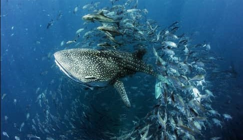
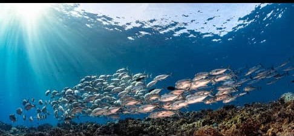

The ocean is the body of salt that covers about 70%of the earth's surface and contains 97% of the earth's water the ocean is the principal component of Earth's hydrosphere and therefore responsible for life in earth ocean water contains large quantities of dissolved gases like oxygen, carbon dioxide and even nitrogen Its unkown how many different species call the ocean home The ocean is currently known to be a habitat of about 230000 species but it may contain far more. it could be that 90% of the ocean's species are still undiscovered. but with many ecosystems suffering from rising sea temperatures, pollution and other problems, some oceanographers believe the number of species is dropping humans know more about outer space than the oceans on our own planet New species are being discovered deep inside the oceans every year  there are countless species of marine and aquatic life deep beneath the ocean  shools of millions of fish are expanding daily in these gorgeous oceans although there is still much to learn, oceanographers have already made some amaizing discoveries. Forexample, we know that the ocean contains towering mountain ranges and deep canyons known as trenches just like those on land. If Mt. Everest was to be placed in the Mariana or Philipine trench, its peak would not even break the surface if the water